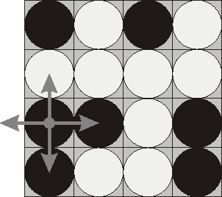

| Input file | FLIP.IN |
| Output file | FLIP.OUT |
| Time limit | 15 seconds per test |
Flip game is played on a rectangular 4x4 field with two-sided pieces placed on each of its 16 squares. One side of each piece is white and the other one is black and each piece is lying either it's black or white side up. Each round you flip 3 to 5 pieces, thus changing the color of their upper side from black to white and vice versa. The pieces to be flipped are chosen every round according to the following rules:
 Consider the following position as an example:
bwbw wwww bbwb bwwb
Here "b" denotes pieces lying their black side up and "w" denotes pieces lying their white side up. If we choose to flip the 1st piece from the 3rd row (this choice is shown at the picture), then the field will become:
bwbw bwww wwwb wwwb
The goal of the game is to flip either all pieces white side up or all pieces black side up. You are to write a program that will search for the minimum number of rounds needed to achieve this goal.
The input file consists of 4 lines with 4 characters "w" or "b" each that denote game field position.
Write to the output file a single integer number - the minimum number of rounds needed to achieve the goal of the game from the given position. If the goal is initially achieved, then write 0. If it's impossible to achieve the goal, then write the word "Impossible" (without quotes).
Sample input #1bwbw wwww bbwb bwwb Output for the sample input #1Impossible |
Sample input #2bwwb bbwb bwwb bwww Output for the sample input #24 |